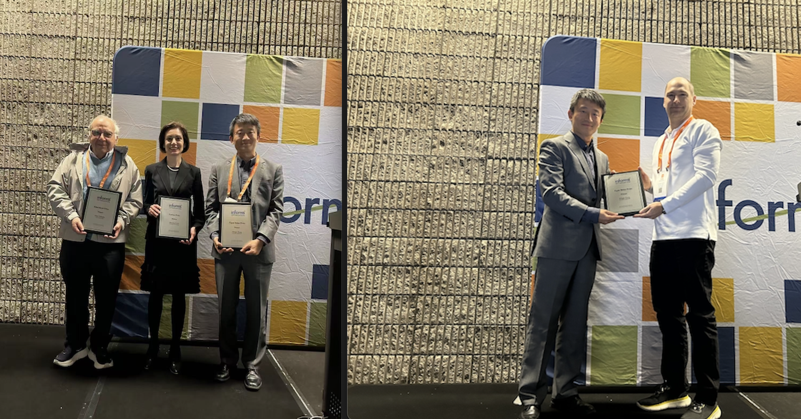
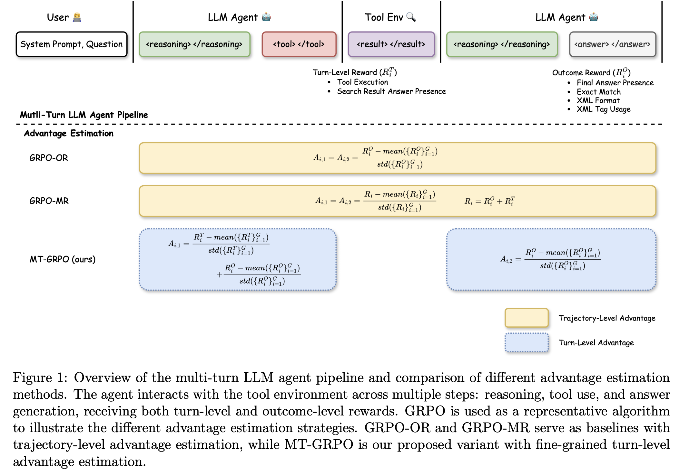
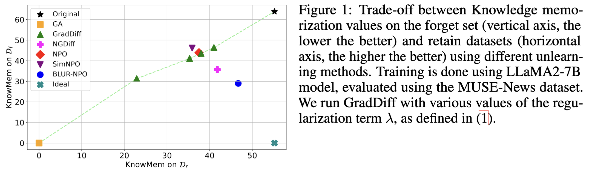

Who Are We?
The **Optimization for Artificial Intelligence (OptimAI) Lab** at the University of Minnesota focuses on designing and analyzing optimization methods for problems arising in data science, machine learning, and AI. Our research spans both theoretical foundations—including first-order/zeroth-order stochastic algorithms, momentum-based methods, bi-level and min-max optimization, and equilibrium analysis for noncooperative games—and practical applications in LLM agents, alignment for large language models and diffusion models, robust machine learning, inverse reinforcement learning, differential privacy, and scalable fine-tuning algorithms.
Open Positions
We have research assistant and postdoctoral fellow positions available in the general areas of optimization, diffusion models, and LLM. If you are interested, please contact Dr. Hong.
News
| Feb 01, 2026 | Our tutorial paper Aligning Large Language Models with Human Feedback: Mathematical Foundations and Algorithm Design, joint work with Siliang, Luca, Chenliang, Jiaxiang, Volkan (EPFL), Stephano (Stanford), Markus (Google) and Alfredo (TAMU), has been accepted by SPM. |
|---|---|
| Jan 01, 2026 | Mingyi and Jiaxiang are organizing three sessions on INFORMS Optimization Society Conference (IOS). Two sessions on optimization for foundations models, and one on bilevel optimization. |
| Dec 01, 2025 | M. is awarded a JPMorgan Chase Faculty Research Award to support the research on the general direction of optimization for foundation models. |
| Nov 10, 2025 | Dawei Li joined the group as a visiting researcher. Dawei obtained PhD degree from the Department of Industrial and Enterprise Systems Engineering from UIUC. Welcome! |
| Nov 05, 2025 | Chung Yiu (Oscar) Yau joined the group as a Post-Doctoral Fellow. Oscar obtained PhD degree from the Department of Systems Engineering and Engineering Management from Chinese University of Hong Kong. Welcome! |
| Nov 01, 2025 | A new set of tutorial slides on bilevel optimization developed by M. and Prof. Steve Wright can be found here. |
| Sep 15, 2025 | M. Receives the Egon Balas Prize from INFORMS Optimization Society. This prize is awarded annually to an individual for a body of contributions in the area of optimization. See here for the CSE announcement.  |
| Sep 10, 2025 | A new paper A Correspondence-Driven Approach for Bilevel Decision-making with Nonconvex Lower-Level Problems, joint work with Xiaotian, Jiaxiang and Shuzhong is available here. In this work, we study challenging bilevel optimization problems where the lower-level problem is non-convex. |
| Sep 05, 2025 | Welcome Zijian Zhang (ECE) and Shuyu Gan (CSE, co-advised with DK) who joined the group as first-year PhD students. |
| Jul 10, 2025 | A new 3-year grant Collaborative Research: Unregistered Spectral Image Fusion in Remote Sensing: Foundations and Algorithms is awarded by NSF (joint work with Xiao). In this work, we develop theory and algorithms for challenging fusion tasks in remote sensing. |
| Jul 05, 2025 | M. Delivered a semi-plenary talk in ICCOPT 2025. The slides can be found here. |
| Jun 10, 2025 | A new paper A Minimalist Optimizer Design for LLM Pretraining, joint work with Thanos, Jiaxiang and Andi is available here. In this work, we propose an approach that builds efficient pretraining algorithms from scratch. |
| May 20, 2025 | A new 2-year grant Invariance in LLM Unlearning Advancing Optimization Foundations for Machine Unlearning is awarded by Open Philanthropy (Technical AI Safety Research, joint work with Sijia and Shiyu). In this work, we develop theory and algorithms for LLM unlearning. |
| May 15, 2025 | A new paper Reinforcing Multi-Turn Reasoning in LLM Agents via Turn-Level Credit Assignment, joint work with Siliang, Quan, William (Prime Intellect), Oana (Morgan Stanley), Yuriy Nevmyvaka (Morgan Stanley) is available here. In this work, we show that it is critical to perform credit assignment when training LLMs for multi-turn agent applications. Code available here.  |
| May 10, 2025 | Siliang Zeng successfully defended his thesis. Congratulations, Dr. Zeng! |
| May 10, 2025 | A new paper BLUR: A Bi-Level Optimization Approach for LLM Unlearning, joint work with Hadi, Sijia and Amazon colleagues is available. In this work, we propose a new formulation of the unlearning problem, based on a (simple) bilevel optimization, which can prioritize the unlearning capabilities while maintaining the desirable content from the LLM output. Code available here.  |